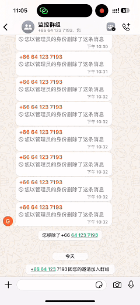
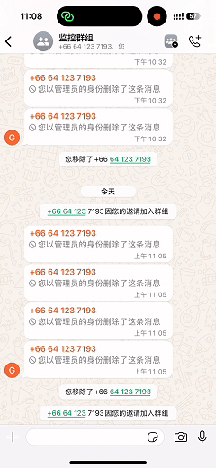
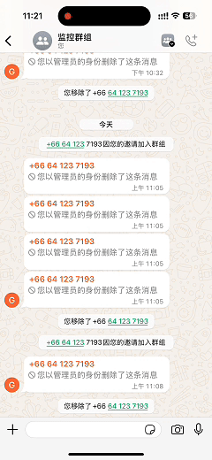

你的 WhatsApp 群，正在被慢性摧毁。
广告、诈骗、恶意引流 —— 正在吞噬你的客户与利润。
⚠ 为什么 90% 的群最终都会失控？
- 广告机器人 1 秒进群
- 诈骗信息一次毁掉信任
- 恶意用户反复换号进群
- 人工管理员不可能 24 小时在线
你的问题不是缺管理员，而是没有自动化风控系统。
🛡 这不是普通机器人
这是群自动化安全防御系统
✔ 本地部署，数据完全自控
✔ 普通 WhatsApp 账号登录
✔ 7×24 小时实时监控
✔ 黑名单 + 关键词双重拦截
✔ 一次违规，永久封禁
🚀 四层自动化防御机制
第一层：启动清理
自动扫描群成员，黑名单立即清除。
第二层：实时消息风控
触发关键词 → 删除 → 踢出 → 永久拉黑。
第三层：入群秒级拦截
黑名单用户入群立即踢出。
第四层：跨群防渗透
同一用户限制多群加入，杜绝引流。
💰 你真正损失的是什么？
- 客户信任
- 成交机会
- 品牌形象
人工管理一年成本远高于自动化系统。
风控不是成本，是利润保护系统。
如果你的群对你有价值，现在就部署。
立即联系 Telegram 部署系统
📌 功能演示
▶ 多条关键词信息 → 自动踢出

▶ 单条关键词信息 → 自动踢出

▶ 黑名单入群 → 秒级踢出
